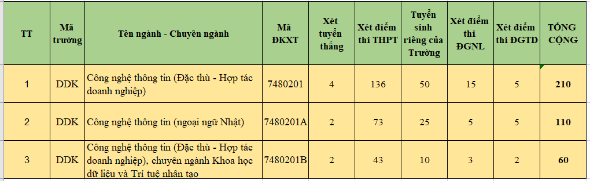

1. Phương thức xét tuyển
Năm 2023, Khoa CNTT sử dụng 5 phương thức xét tuyển:
a. Xét tuyển thẳng theo quy chế tuyển sinh của Bộ GD&ĐT.
b. Xét tuyển theo quy định của Trường
c. Xét tuyển theo điểm thi tốt nghiệp THPT 2023
d. Xét tuyển theo kết quả thi đánh giá năng lực của ĐHQG-TpHCM
e. Xét tuyển theo kết quả thi đánh giá tư duy của ĐH Bách khoa Hà Nội.
Khoa CNTT không xét tuyển theo hình thức xét học bạ.
2. Chỉ tiêu tuyển sinh và mã đăng ký xét tuyển

3. Tổ hợp các môn xét tuyển
|
TT |
TÊN NGÀNH |
MÃ ĐKXT |
TỔNG CHỈ TIÊU |
TỔ HỢP XÉT TUYỂN |
|
1 |
Công nghệ thông tin (Đặc thù - Hợp tác doanh nghiệp) |
7480201 |
210 |
A00, A01 |
|
2 |
Công nghệ thông tin (ngoại ngữ Nhật) |
7480201A |
110 |
A00, A01 |
|
3 |
Công nghệ thông tin (Đặc thù - Hợp tác doanh nghiệp), chuyên ngành Khoa học dữ liệu và Trí tuệ nhân tạo |
7480201B |
60 |
A00, A01, D28 |
4. Một số thông tin về các chuyên ngành đào tạo thuộc khoa CNTT
a. Chuyên ngành An toàn thông tin
Trang bị kiến thức cơ bản và chuyên sâu về an toàn thông tin, đặc biệt là mạng máy tính, đáp ứng yêu cầu về nghiên cứu, ứng dụng trong lĩnh vực an toàn mạng máy tính; khả năng thiết kế, duy trì và quản lý an toàn cho các hệ thống mạng.
Học chuyên ngành An toàn thông tin có cơ hội việc làm: Chuyên gia quản trị an ninh mạng, cơ sở dữ liệu; phân tích, tư vấn, thiết kế hệ thống thông tin đảm bảo an toàn; Kiểm tra, đánh giá an toàn thông tin cho mạng và hệ thống; rà soát lỗ hổng, điểm yếu và xử lý sự cố an toàn thông tin; Chuyên gia lập trình và phát triển ứng dụng đảm bảo an toàn thông tin.
b. Chuyên ngành Công nghệ phần mềm
Học chuyên ngành CNPM có cơ hội học tập và thực hành phương pháp, kỹ thuật, công nghệ trong phân tích, thiết kế, phát triển, kiểm thử, bảo trì phần mềm, phát triển các phần mềm ứng dụng trong các lĩnh vực cụ thể theo các công nghệ và nền tảng mới.
c. Chuyên ngành Khoa học dữ liệu và Trí tuệ nhân tạo
Sinh viên chuyên ngành Trí tuệ nhân tạo sẽ học tập và thức hành từ căn bản đến nâng cao trong lĩnh vực trí tuệ nhân tạo như hệ chuyên gia, tương tác người máy và ứng dụng trong các môi trường như hệ đa phương tiện; xử lý hình ảnh, âm thanh; phân tích dữ liệu lớn. Sinh viên tốt nghiệp chuyên ngành trí tuệ nhân tạo có cơ hội việc làm: Kỹ sư phát triển ứng dụng AI; Kỹ sư phát triển hệ thống tự động hóa, robot; Kiến trúc sư dữ liệu, chuyên viên phân tích dữ liệu; Nghiên cứu chuyên sâu về trí tuệ nhân tạo; Ứng dụng trí tuệ nhân tạo trong các tổ chức, doanh nghiệp...
d. Chuyên ngành Hệ thống thông tin
Sinh viên được học sâu hơn về các hệ thống thông tin trong doanh nghiệp, tìm hiểm nghiệp vụ triển khai các hệ thống thông tin, đảm bảo hệ thống thông tin của doanh nghiệp hoạt động an toàn cũng như phát triển các ứng dụng cho các hệ thống của doanh nghiệp. Sinh viên tốt nghiệp chuyên ngành Hệ thống thông tin có cơ hội việc làm: Quản trị các hệ cơ sở dữ liệu; Chuyên viên phân tích, tư vấn, thiết kế hệ thống thông tin; Chuyên viên phát triển ứng dụng cho hệ thống thông tin; Chuyên viên triển khai, vận hành các hệ thống ERP, CRM...;
e. Chuyên ngành Mạng và truyền thông
Sinh viên sau khi học chuyên ngành Mạng và Truyền thông có khả năng nghiên cứu, thiết kế và phát triển phần mềm ứng dụng, các dịch vụ trên mạng Internet, mạng truyền thông di động Triển khai các công nghệ mạng máy tính, các hệ thống truyền thông đa phương tiện. Thiết kế, vận hành và quản lý các hệ thống mạng và truyền thông máy tính. Xây dựng và triển khai các giải pháp an toàn hệ thống và bảo mật thông tin.
f. Chuyên ngành Hệ thống nhúng
Từ nền tảng của ngành CNTT, chuyên ngành HTN tiếp cận từ căn bản đến nghiên cứu sâu hơn về phần cứng và kết nối với các nền tảng di động, hệ thống thông tin. Chuyên ngành HTN giới thiệu về các ứng dụng cho dữ liệu lớn, điện toán đám mây. Sinh viên học chuyên ngành này có cơ hội thực hành phát triển và triển khai các ứng dụng về nhà thông minh (smart home), thành phố thông minh (smart city), dịch vụ sức khỏe, tài chính. Cơ hội việc làm: Phát triển ứng dụng IoT; Phát triển phần mềm, hệ thống nhúng; Tham gia các dự án tích hợp hệ thống thông minh từ đơn giản đến phức tạp.
5. Vị trí việc làm:
Sau khi tốt nghiệp, các kỹ sư Công nghệ Thông tin có thể:
* Giảng dạy các kiến thức và kỹ thuật liên quan đến công nghệ thông tin tại các trường đại học, cao đẳng, trung học chuyên nghiệp, dạy nghề và các trường phổ thông.
* Nghiên cứu khoa học thuộc các lĩnh vực về công nghệ phần mềm, công nghệ mạng và các hệ thống nhúng ở các viện nghiên cứu, các trung tâm và cơ quan nghiên cứu của các Bộ, ngành, các trường Đại học và Cao đẳng.
* Làm việc ở bộ phận công nghệ thông tin hoặc cần ứng dụng công nghệ thông tin của tất cả các đơn vị có nhu cầu (hành chính sự nghiệp, ngân hàng, viễn thông, hàng không, xây dựng…).
* Làm việc trong các công ty sản xuất, gia công phần mềm trong và ngoài nước.
* Làm việc tại các công ty tư vấn về đề xuất giải pháp, xây dựng và bảo trì các hệ thống thông tin, hệ thống mạng và truyền thông, hệ thống nhúng.
* Tiếp tục học Thạc sỹ hoặc Tiến sỹ trong lĩnh vực CNTT và các lĩnh vực liên quan..
6. Kênh thông tin tư vấn tuyển sinh:
- Fanpage Khoa: https://www.facebook.com/dut.itf/
- Zalo tư vấn: https://zalo.me/g/cevgsk363
- Website: http://dut.udn.vn/khoaCNTT